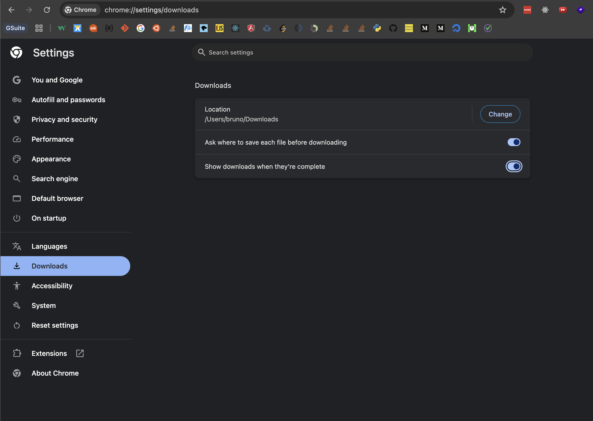
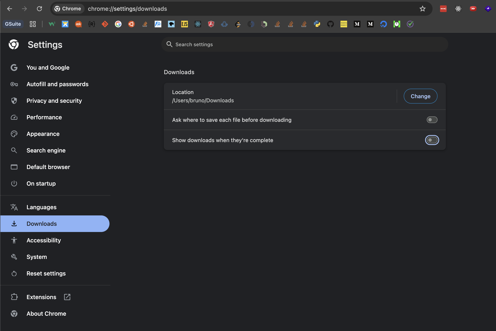
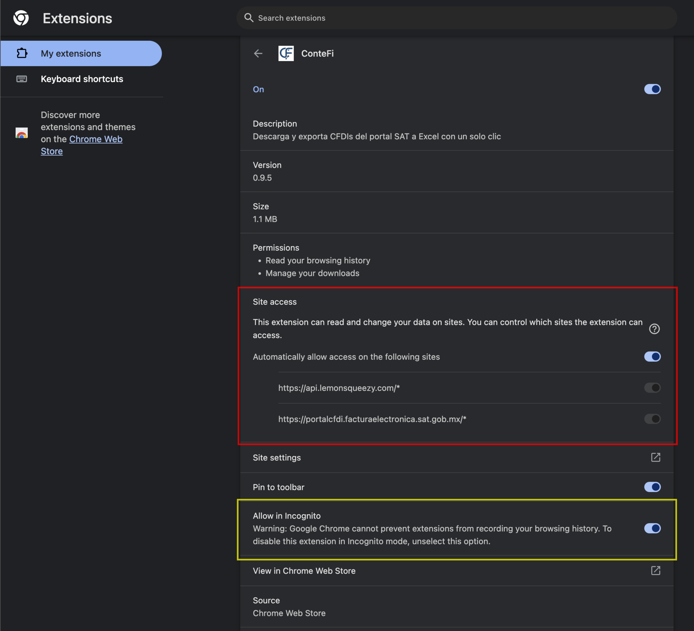
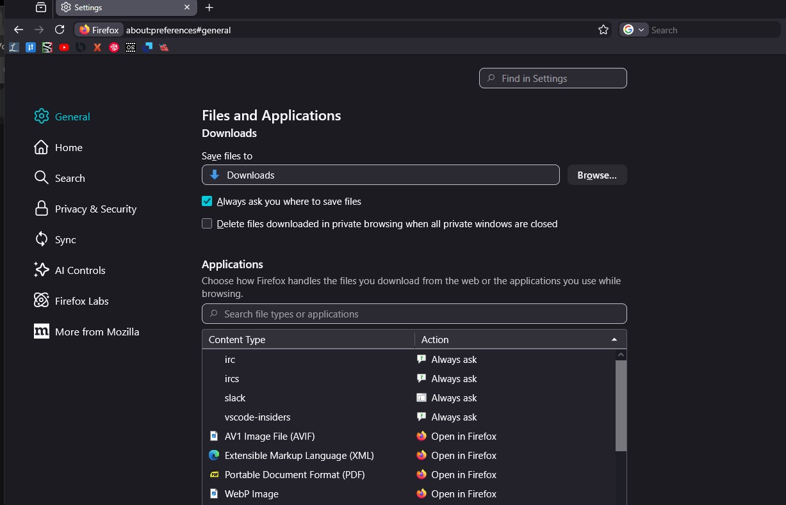
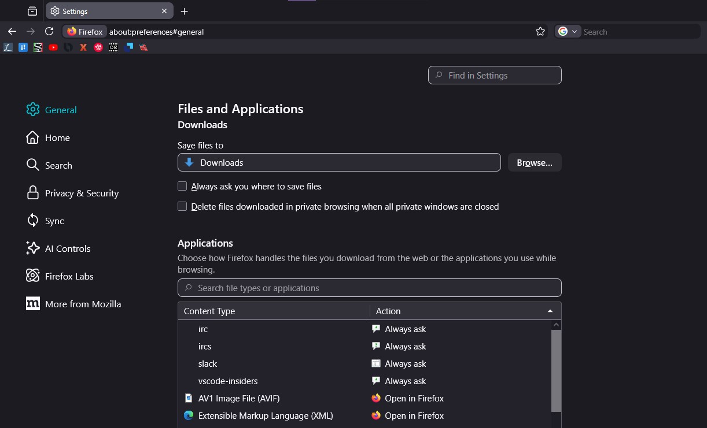
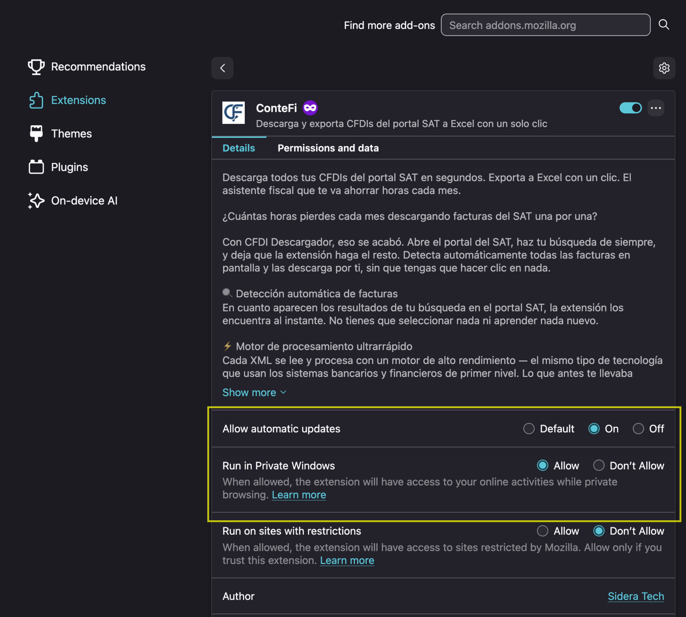
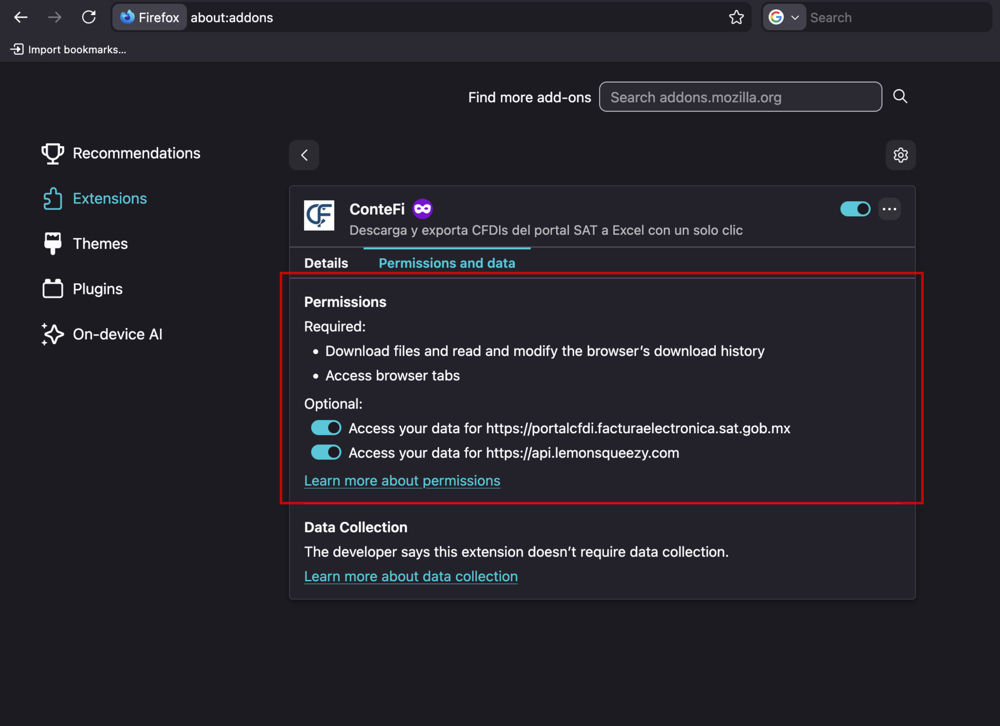

Herramienta de contabilidad
Descarga todos tus CFDIs del portal SAT en segundos. Expórtalos a Excel con un clic. Ahórrate horas cada mes.
Guía de instalación
Sigue estos pasos sencillos para que la extensión Contefi funcione correctamente en tu navegador. No necesitas conocimientos técnicos, solo unos clics.
Abre el navegador y ve a Configuración → Descargas. Deshabilita las opciones "Preguntar dónde guardar cada descarga" y "Abrir descargas cuando terminan" para que los archivos se guarden automáticamente.


En la barra de dirección escribe chrome://extensions (o edge://extensions / brave://extensions) y presiona Enter.
Localiza ConteFi en la lista de extensiones y haz clic en Detalles.
En la sección "Acceso al sitio", selecciona "En todos los sitios" para que Contefi pueda funcionar en cualquier página que visites. También, opcionalmente, puede habilitar la extensión para correr en ventanas privadas.

Los pasos para navegadores Brave y Edge son iguales. Sólo habra pequeñas diferencias en los interfaces de cada navegador.
Abre Firefox y ve a Configuración → General → Descargas. Desmarca "Preguntar siempre dónde guardar los archivos".


En la barra de dirección escribe about:addons y presiona Enter. Se abrirá el administrador de complementos.
Haz clic en Extensiones en el menú izquierdo y selecciona ConteFi.
En la pestaña de "Detalles", puede habilitar la opción "Correr en ventanas privadas" si es necesario. También, se recomienda habilitar actualizaciones automaticas.

Ve a la pestaña "Permisos y datos" y confirma que Contefi tiene acceso a los datos de los sitios necesarios. Con esto la extensión quedará lista para usar.
